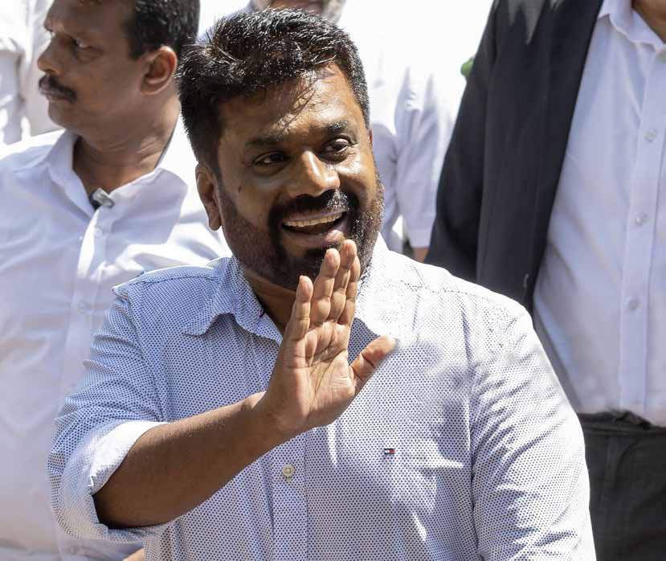
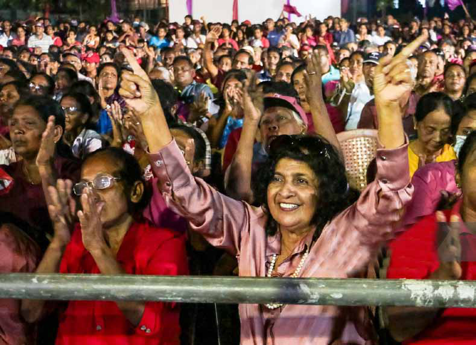
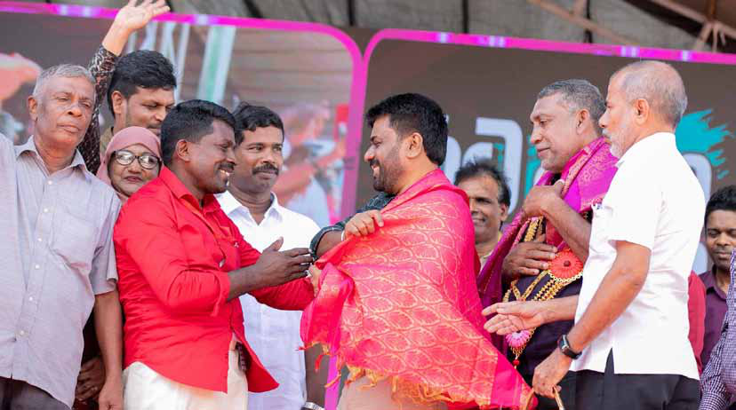
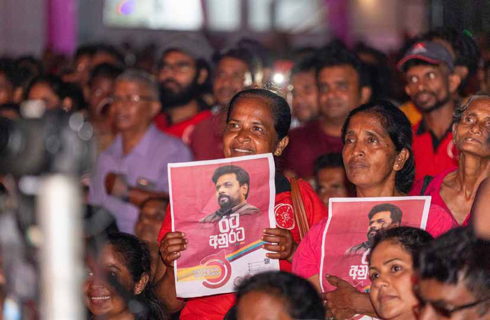
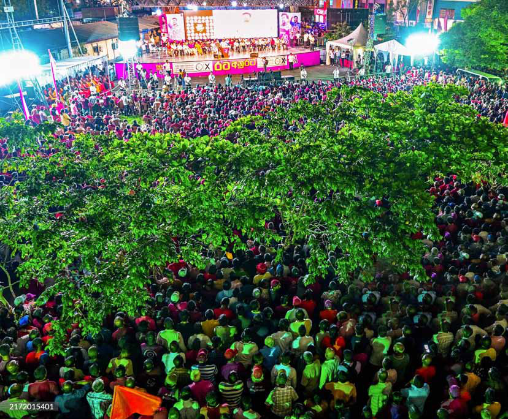
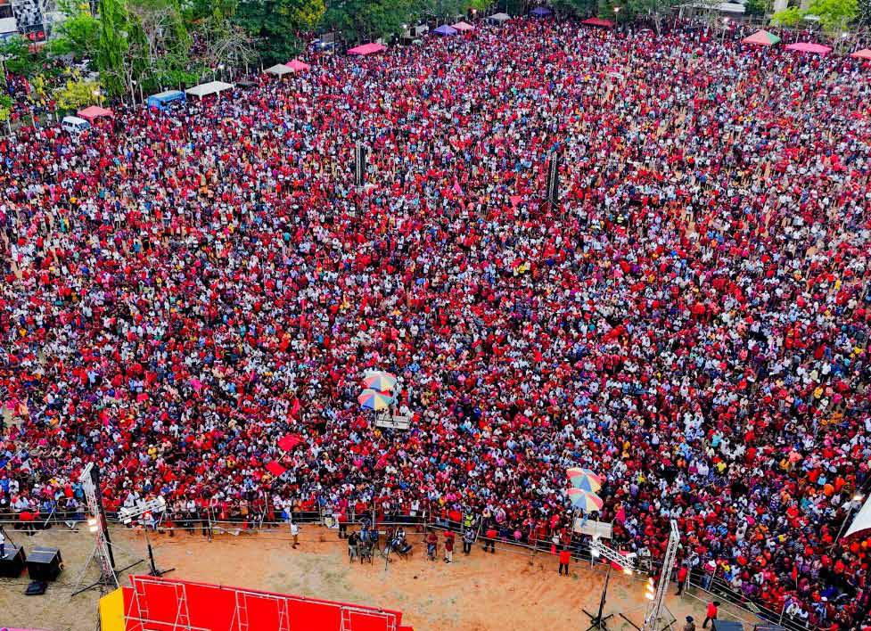
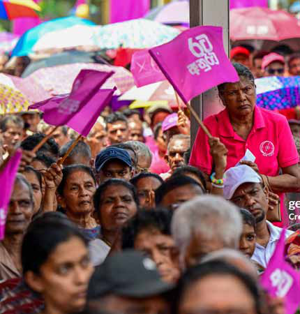

BY: Kaniyan Pungundran fzpad; G+q;Fd;wd;
BY: Kaniyan Pungundran fzpad; G+q;Fd;wd;
Jaffna Monitor
hellojaffnamonitor@gmail.com
7
O
n November 13, 1989, Patabendi Don
Jinadasa Nandasiri Wijeweera—better
known as Rohana Wijeweera, the fiery founder
of the Janatha Vimukthi Peramuna (JVP)
and an ardent extreme-left nationalist—met
a brutal and tragic end. The mastermind
behind two bloody insurrections, in 1971 and
1987, Wijeweera was subjected to inhumane
torture before being executed in cold blood
on the Colombo Golf Course. Some accounts
even suggest that when he was cremated at a
crematorium near Devi Balika Girls' School,
he was still half-alive.
Exactly 35 years and one day later, the
National People's Power (NPP)—a political
alliance led by the JVP, whose members
still regard Rohana Wijeweera as their
ideological father—achieved a historic and
groundbreaking victory. In an unprecedented
feat, the NPP secured 159 seats and 61.56% of
the national vote, surpassing all expectations.
This election marked a watershed moment
in Sri Lanka's political history, as it was
the first time a party achieved a two-thirds
majority in Parliament under the proportional
representation system.
BY:
Kaniyan Pungundran
fzpad; G+q;Fd;wd;

Jaffna Monitor hellojaffnamonitor@gmail.com 8 Despite securing only 42% of the vote in the presidential election less than two months ago, the NPP experienced a remarkable surge in support during this brief period. Moreover, the NPP engineered a dramatic shift, reducing the main opposition, the Samagi Jana Balawegaya (SJB), to just 40 seats. Nationally, out of 160 electoral divisions, the National People's Power (NPP) secured victories in all but 9 divisions. What was most striking was the NPP's remarkable performance in the Tamil-speaking areas of Sri Lanka. A Fatal Blow to Tamil Nationalism In the context of Tamil Eelam and Tamil nationalism, the Vaddukoddai Resolution stands mighty and profoundly symbolic, adopted on May 14, 1976, by the Tamil United Liberation Front under the leadership of S. J. V. Chelvanayakam, with key proponents like Appapillai Amirthalingam in Vaddukoddai, Jaffna. It called for the creation of an independent Tamil Eelam, outright rejecting the Sri Lankan state. This was a watershed moment in the modern history of Sri Lanka, marking the first formal demand for a separate state for the Sri Lankan Tamils. Before this, Tamil demands were limited to devolution of power or power- sharing within a federal system. One could argue that the resolution, coupled with the state-sponsored violence against Sri Lankan Tamils in 1977 and 1983, fueled the rise of militancy and the ensuing two-and-a-half decades of bloody civil war. After 48 years, 6 months, 2,530 weeks, and 6

Jaffna Monitor hellojaffnamonitor@gmail.com 9 days since the adoption of the Vaddukoddai Resolution, the Vaddukoddai electoral division has been won by a Sri Lankan nationalist party. While the JVP identifies as a Marxist-Leninist movement, its historical trajectory reveals a staunch Sri Lankan nationalist stance, one that firmly rejected even the idea of devolution of power to Tamils. The party also engaged in bloody armed resistance against the Indo-Sri Lankan Accord of 1987, which established the 13th Amendment to Sri Lanka's Constitution. This Amendment created the system of Provincial Councils, promising greater devolution of land and police powers to Tamil- majority areas. Not only in the Vaddukoddai electoral division, but across the 11 electoral divisions in the Jaffna District, the National People's Power (NPP) secured victory in 8 divisions. Remarkably, many of these wins occurred in areas long regarded as strongholds of Tamil nationalism. Furthermore, the NPP claimed 3 out of the 6 seats in the Jaffna electoral district. marking the first time since Sri Lanka's independence in 1948 that a non-Tamil party has triumphed in the Tamil-majority Jaffna. "This is the crown of our victory," declared Bimal Rathnayake, a prominent JVP member and newly appointed Minister of Transport, Highways, Ports, and Civil Aviation, reflecting on the NPP's historic success in Jaffna. As news broke of Jaffna being captured by the NPP, Rathnayake emphasized the significance of the moment in a post on X (formerly Twitter): "In Sri Lankan history, we have seen leaders who were loved by either the North or the South. However, for the first time, we are witnessing a leader—AKD—who is cherished by people from the North, East, South, and West. He is a leader embraced by all Sri Lankans, regardless of religion or ethnicity." In Sri Lanka's Tamil-majority regions, the NPP's victory extended well beyond Jaffna,

Jaffna Monitor hellojaffnamonitor@gmail.com 10 sweeping nearly all districts across the North and East. The sole exception was Batticaloa in the Eastern Province. Notably, the Vanni electoral district—including Mullaitivu, home to Mullivaikkal, the site where the bloody civil war ended and the LTTE leader met his demise—also fell to the NPP in a poignant twist of irony. In Batticaloa, the Illankai Tamil Arasu Kachchi (ITAK) retained its hold on the Kalkudah and Paddiruppu electoral divisions. However, the NPP still left its mark by winning the Batticaloa electoral division. A closer analysis at the electoral division level reveals a remarkable shift in voting patterns across the North and East. Out of the 24 divisions in these regions, the National People's Power (NPP) emerged victorious in 15. Overall, the NPP garnered 26.75% of the total votes in the North and East. For context, in the 2020 parliamentary election, the Tamil National Alliance (TNA)—widely regarded as the torchbearer of Tamil nationalism—secured 27.58% of the vote in these same regions. If we consider the LTTE's once-claimed Tamil Eelam, encompassing the districts of Jaffna, Kilinochchi, Mullaitivu, Vavuniya, Mannar, Trincomalee, Batticaloa, Ampara, and Puttalam, the NPP achieved a staggering victory, securing 18 out of the 36 parliamentary seats. Notably, an additional 6 seats were won by non-Tamil parties. The NPP's victory extended beyond the North and East, decisively winning in other Tamil- speaking areas, including the hill country spanning the Central, Southern, and Uva provinces. The results delivered a significant blow to traditional parties representing the Malaiyaha Tamil community. Notably, the NPP dominated the Nuwara Eliya district, famous for Sri Lanka's iconic tea estates. In this region the NPP secured five seats and

Jaffna Monitor hellojaffnamonitor@gmail.com 11 captured nearly 42% of the vote share. ''Tamil political parties, long reliant on emotional nationalist slogans and manipulative rhetoric, have operated almost entirely in the realm of self-interest, betraying the very people who elected them. From secret dealings with the government—whether for bar permits or other personal favors— they now face the consequences of failing to critically assess their political trajectory,'' noted a political observer. "They thought they could fool the Tamils forever," another observer remarked, quoting Bob Marley's famous lyric: "You can fool some people sometimes, but you can't fool all the people all the time." The observer added, "For them, it's too late even for introspection." AKD: THE TRUE THESIYA THALIVAR (NATIONAL LEADER) The sheer popularity and admiration for Sri Lanka's current President, Anura Kumara Dissanayake (fondly known as AKD), can only be captured through a Rajinikanth punchline from Sivaji: The Boss: Pera kettaale chumma athiruthilla! (Doesn't everything quake at the mere mention of my name?). AKD, in every sense, has won the hearts of people across Sri Lanka, transcending barriers of caste, religion, ethnicity, and social status. In Jaffna, where the National People's Power (NPP) secured three out of six MPs, voters often couldn't even name the NPP candidates. It was the magnetic love and admiration for AKD himself that drew their votes. Many voters, when asked by Jaffna Monitor about their choice, openly admitted they didn't know the candidates' names. Take my fish vendor Akka, for example. When she told me she planned to vote for the NPP, I asked her which candidate she would give her preferential vote to. She shot back: "Is that what matters? I'm voting for President Thampi's (younger brother's) party!" When I pressed her on why, her response was as simple as it was profound: "He looks like us—hardworking, honest, and genuine." This genuine, unpretentious connection is what makes AKD stand out. They see him as one of their own, someone they can relate to, almost like family. AKD's journey from humble beginnings to the highest office in the country is a story that deeply resonates with the people, inspiring hope and trust in a way few leaders can. From Promises to Action: NPP's Victory and the Road Ahead On election day, Sri Lankan President Anura Kumara Dissanayake remarked that he anticipated "strong representation" in Parliament, adding that achieving a two-thirds majority was not a necessity. However, the voters had other plans. This historic victory marks a seismic shift in the country's political landscape and positions President Dissanayake with the unprecedented advantage of governing without the need for allies or coalition partners to pass legislation. The NPP has already pledged to hold a referendum on drafting a new constitution, signaling its intent to fundamentally reshape the country's political and governance framework. This moment, brimming with possibility, could redefine Sri Lanka's future. But will these promises be fulfilled? That remains to be seen.
Jaffna Monitor hellojaffnamonitor@gmail.com 12 Faith in AKD: North and East Await Action on Promises A few days before Sri Lankans headed to the polls, AKD addressed a fully packed election meeting in Passaiyoor, Jaffna. Speaking to an enthusiastic crowd, the President acknowledged the changing political landscape on the peninsula. "We received just over 27,000 votes in Jaffna during the presidential election. This was because we did not convey our message effectively to the Tamil-speaking people. It was also because we did not work as hard in the North as we did in the [Sinhala-dominated] South," he admitted. He continued, "Your turnout today shows that you are willing to place your trust in us. I invite all of you, the people of Jaffna, to join me in this effort to change the political culture of our country." During his address, President Dissanayake made a bold and transformative promise: lands seized by the State during the war with the Liberation Tigers of Tamil Eelam (LTTE) would be returned to their rightful owners.

Jaffna Monitor hellojaffnamonitor@gmail.com 13 This commitment tackles one of the most pressing and long-standing demands of the Northern people. Earlier, during a speech in Vavuniya, he declared his intention to end the prolonged detention of Tamil political prisoners, stating firmly, "According to the advice of the Attorney General, we will move forward with the release of these prisoners." His manifesto echoed these sentiments, pledging the abolition of oppressive laws, including the Prevention of Terrorism Act (PTA). Further, Dissanayake promised during his campaign to conduct provincial council elections within a year and vowed to abolish the executive presidency, a long-debated and highly contentious issue. Although he affirmed his party's support for implementing the 13th Amendment during a discussion with the Illankai Tamil Arasu Kachchi (ITAK), he notably refrained from making such a declaration in public. Instead, at a recent event in Jaffna, AKD clarified his stance with characteristic candor, stating, "I am not here to barter the 13th Amendment in exchange for Tamil votes." Now, with the overwhelming faith placed in him by the people of the North and East, it is time for President Dissanayake to translate these promises into action. Importantly, neither AKD nor his party requires external support to fulfill these commitments. With a commanding two-thirds majority in Parliament, they possess the power to enact transformative change independently.

Jaffna Monitor hellojaffnamonitor@gmail.com 14 'Our Path Was Forced Upon Us: Tilvin Silva on Rewriting the JVP's Legacy In an interview with The Hindu, Tilvin Silva, General Secretary of the JVP, challenged prevailing narratives surrounding the party's tumultuous past. "There is a wrong perception because our history was written by those who defeated us. Our path was not one we willingly chose; it was forced upon us," he explained. "It was not [our] action, but a reaction from our end. If the [State's] repression was armed, so was [our] response." Looking to the future, Silva expressed hope for a transformative moment in Sri Lanka's political landscape. He underscored that the current context provides an opportunity to rewrite the narrative. "We want to tell this story, not with words, but through our actions," he asserted. "The present context gives us the chance to do that." Sri Lanka's Moment of Reckoning: Historic Challenges, Monumental Stakes Sri Lanka, where it stands now, can only be described as being at a historic juncture. The country is grappling with its worst economic crisis since independence—or perhaps even earlier—and the sweeping social and political changes we are witnessing are intrinsically tied to this crisis. "Had the economic crisis not unfolded, who would have thought the NPP would rise to power or that the North and East would align with a national party?" an observer mused. With the poverty rate soaring to 25.9% and the World Bank projecting a modest 2.2% economic growth for 2024, Sri Lanka's fragility is evident. The immediate challenge lies in ensuring access to essential goods and services for its people. How the new government navigates these turbulent waters will not only test its resilience but also define the nation's trajectory. The stakes are monumental, and the people's expectations are even higher. AKD has pledged to rewrite the narrative: to repay the country's debts, transform Sri Lanka's entrenched political culture, erase the divisions along ethnic lines to unify as Sri Lankans, and hold corrupt figures from past regimes accountable. These promises have struck a chord with a population yearning for justice and stability. Yet, they set a formidable bar, one that will demand vision, grit, and relentless determination to achieve. The road ahead is steep, the burden heavy, but Sri Lanka's moment for reinvention has arrived. The question remains: will it rise to the occasion?
